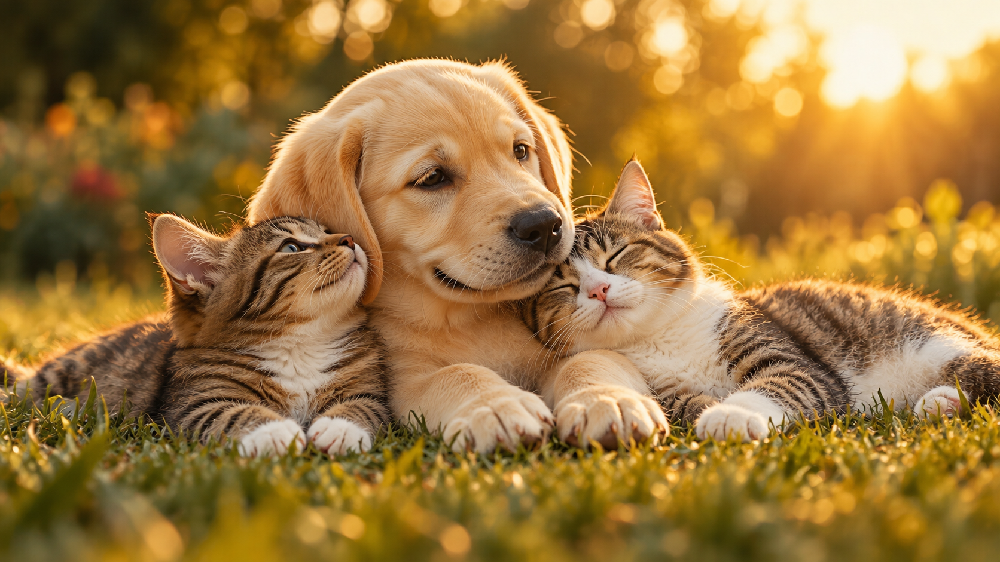

Muitos cães e gatos são abandonados e precisam de cuidado e proteção. Organizações de proteção animal acolhem esses bichinhos até que encontrem um novo lar.
A Sociedade União Internacional Protetora dos Animais, a SUIPA, é uma entidade do Rio de Janeiro, sem fins lucrativos e de utilidade pública, que existe desde 1943. Ela é não eutanásica, ou seja, não pratica eutanásia.
Você pode ajudar adotando um animal, fazendo uma doação ou se associando a uma organização de proteção animal. Cada gesto faz diferença na vida de quem está abrigado.